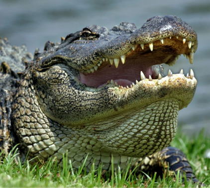

Alligator camera
Alligator

Diet:
Herbivore (We provide a medley of fruits and vegetables to our western lowland gorillas)
Range:
Western Africa [VIEW MAP]
Habitat:
Rainforests (Simulation of the natural environment)
General Information:
There are two species of gorilla, each containing two subspecies. The two species are eastern and western, and the four sub-species are Cross River and Western Lowland (are sub-species of the Western species) and Grauer’s and Mountain (are sub-species of the Eastern species). Western gorillas can be distinguished from other gorilla subspecies by their brownish-gray hair, auburn-colored crests and overall smaller size. Eastern gorillas tend to be black in color and larger in size. In all gorillas, males develop silver coloration along their backs as they mature. The species is diurnal, which means they are active during the day, and of all the great apes, gorillas are the most terrestrial. This means that they primarily live on the ground, although they do occasionally climb trees to feed and nest. They are also able to stand on two legs for short periods of time.
Giant pandas communicate with one another in dense bamboo forests primarily by scent. Males regularly scent-mark the margins of their territories by adopting a “headstand” position to mark a bamboo stalk with their anogenital glands.
Physical features and characteristics:
Gorillas are the largest of all primates and reach physical maturity between 12 and 15 years of age. Males can be between 350 and 450 pounds, almost twice as much as females, weighing in between 150 and 250 pounds. Males stand between 5.5 to 6 feet tall. Females are a bit smaller, standing between 4’7” to 4’11”. The males’ heads are large and pointed due to the sagittal crest that forms the back of the top of the head. This crest serves as the foundation for attachment of a great number of jaw muscle fibers, which allows for the chewing power needed to process tough vegetation.
The vision and perception of western lowland gorillas is similar to that of humans. Gorillas have a prominent brow ridge, small, flat ears, and hear about the same as humans. The nose is broad, flat and fleshy. The wrinkles on a gorilla’s nose, known as a noseprint, are like human fingerprints, and every individual’s noseprint is unique. Researchers use these noseprints as identification markers in their studies, both in zoological settings and in the wild.Gorillas have 32 teeth, including sharp canines used for defense and breaking through vegetation. Their molars have complicated patterns of cups and ridges that facilitate chewing of tough plant fibers.Gorillas’ faces, hands, and feet are bare, but the rest of their bodies are covered with short, thin hair. Gorilla hands and feet are large, with leathery palms and soles, and broad, flat nails Their hands are very dexterous and can pick up small, delicate objects. Like their hands, their feet have opposable thumbs and toes. Like all apes, gorillas’ arms are longer than their legs—a feature that allows them to walk on all fours. They are called “knuckle-walkers,” meaning that they walk on the knuckles of their forelimbs and the soles of their hind limbs. This form of locomotion develops calluses on the knuckles, preserving the sensitivity of the fingertips necessary for manipulating smaller objects.
Lifestyle and reproduction:
Females are fertile for only a very short period of time and exhibit delayed implantation. Although twins are not unusual, a mother will typically only rear one cub. Adults are solitary, with mating pairings being quite brief. The tiny cubs are altricial,
or not born in an advanced state of development, and are completely helpless, blind and deaf, and without the furnecessary to regulate their own body temperatures.
As a result, maternal care is extensive. Cubs do not begin eating bamboo until they are around a year old.
When twins are born in zoos, extraordinary measures are taken to train the female to accept swapping of her cubs regularly 24 hours a day, so that she only cares for one a time, but that both receive adequate care.
Habitat:
Their preferred cool and wet bamboo forests are found at elevations between 5,000 and 10,000 feet. Cubs are raised in rocky crevices, dead trees, or caves.
Diet:
Our animal care professionals offer each adult or subadult giant panda about 80 pounds of various bamboo species per day, and they generally select and consume only about third of that. They also are offered nutritious
high-fiber biscuits and fruits such as apples or sweet potatoes.